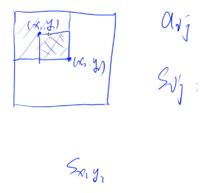
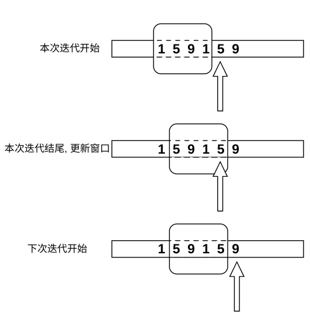

基础算法
代码
-
理解算法
-
记忆算法流程/思想
-
模板题: 快速默写(调试通过)
-
提高熟练度: 重写一道模板题 3-5 次
(要进行"模式识别" : 题目有哪些 特征 引导我们使用X方法?)
排序§
快排 -> 基于分治思想§
-
确定分界点
- 左边界 q[l]
- 中间 q[(l+r)/2]
- 右边界 q[r]
- 随机选取
-
[难点] 调整区间: 让\<= x 的在左边, >=x在右边. (==x的无所谓在左/右)
-
递归处理左右两个区间
#include <iostream>
int n ;
const int N = 1e6 + 10; // +10 防止出现边界问题
int q[N];
void quick_sort(int q[], int left,int right) {
int x = q[left];
int i = left-1;
int j = right+1;
while(i<j){
do{++i;}while(q[i]>x);
do{--j;}while(q[j]<x);
if(i<j){swap(q[i],q[j]);}
}
quick_sort(q,left,j);
quick_sort(q,j+1,right);
}
void quicksort ( int b , int e ,vector<int>& a )
{
if(a.size()<= 1 ) return;
int i=b , j=e , x=a [ ( b+e ) / 2 ] ;
while(i<j){
while ( a [ i ]<x ) i++;
while ( a [ j ]>x )j--;
if ( i<=j ) std::swap ( a [ i++],a [j--]);
}
if ( i<e ) quicksort (i , e , a ) ;
if ( j>b ) quicksort (b , j , a ) ;
}
fn qsort(a: &mut [i32]) {
if a.len()<=1 {return;}
debug_assert!(a.len()>=2);
let mid = (0 + a.len()-1)/2;
let pivot = a[mid];
let mut i = 0;
let mut j= a.len()-1;
while i < j {
while a[i] < pivot { // < !
i+= 1;
}
while a[j] > pivot { // > !
j-= 1;
}
if i <= j { // 必须是 <= !!! eg: arr= [1,2], 否则当i = j = 0 时,陷入死循环.
a.swap(i,j);
if i< a.len()-1 { i +=1;} // 防止 i,j 的索引越界.
if j >0 { j -=1;}
}
}
debug_assert!(j<=i); // b<= j <= i <= e
qsort(&mut a[0..=j]);
qsort(&mut a[i..]);
}
归并§
-
确定分界点
-
先对左右两侧分别进行递归(排序)
3.[难点] 归并左右两个已经排序的区间
双指针算法 : 分别指向左右两个区间的开头, 然后比较指针, 输出较小的,并后移.直到一个指针到末尾.
fn merge_sort(a: &mut [i32]){
if a.len() <= 1 { return ; }
assert!(a.len() != 0);
let len = a.len();
let mid = len/2;
debug_assert!(mid>=1);
let left = mid -1; // >=0
merge_sort(&mut a[0..=left]);
merge_sort(&mut a[mid..len]);
// 归并
let mut tmp = vec![0;len];
let mut i = 0;
let mut j = mid;
let mut k = 0;
while i < mid && j < len {
if a[i] <= a[j] {
tmp[k] = a[i];
i+=1; k+=1;
}else {
tmp[k] = a[j];
j+=1;k+=1;
}
}
while i < mid { tmp[k] = a[i] ; i+=1;k+=1;}
while j < len { tmp[k] = a[j] ; j+=1;k+=1;}
for i in 0..len {
a[i] = tmp[i];
}
}
二分§
整数二分§
整数除法会导致边界问题, 原则是: 调整为右边区间时要将mid点右移(+1).
[l,r] 中选一个中点mid, 来将区间划分为左右两部分, 选择答案所在区间,
然后将下一次要查找的区间更新为"左半边"/"右半边".
-
将区间更新为左半边需要调整的是原有的变量$
r = mid$. 此时 $mid = \frac{l+r}{2}$ . -
将区间更新为右半边需要调整的是原有的变量$
l = mid$. 此时 $mid = \frac{1+l+r}{2}$ . 也就是要让选择的中间点稍微再往右移动一点, 否则将会导致[0,-1]出现(下标越界), 或者反复对[0,1]进行操作(死循环/无限递归)
int bsearch1(int l, int r){
while( l<r ){
int mid = l + r >> 1; // (l+r)/2
if(check(mid))
r = mid;
else
l = mid+1;
}
return l; // l == r
}
int bsearch2(int l, int r){
while(l<r) {
int mid = 1+l+r >> 1; // (1+l+r)/2
if(check(mid))
l = mid;
else
r = mid -1;
}
return l; // l == r
}
浮点数二分§
没有边界问题.
double sqrt(double n ) {
double l = 0;
double r = n;
if(n<1) // eg: n=0.01, res=0.1
r = 1;
double mid = (l+r) / 2.0;
while(r - l > 1e-8){
mid = (l+r)/2.0;
if( mid*mid > n )
r = mid;
else
l = mid ;
}
return l;
}
int main(){
double x{};
std::scanf("%lf",&x);
double res = sqrt(x);
std::printf("%lf",res);
return 0;
}
大整数(高精度)§
实现§
#[derive(Debug, Clone, Copy, PartialEq, Eq)]
enum BigIntSign {
Plus,
Minus,
}
impl BigIntSign {
pub fn reverse(self) -> Self {
match self {
Self::Plus => Self::Minus,
Self::Minus => Self::Plus,
}
}
}
impl Display for BigIntSign {
fn fmt(&self, f: &mut std::fmt::Formatter<'_>) -> std::fmt::Result {
match self {
Self::Plus => write!(f, "+"),
Self::Minus => write!(f, "-"),
}
}
}
#[derive(Debug)]
struct BigInt {
inner: Vec<u8>, // 低位在Vec开头!
sign: BigIntSign,
}
impl Display for BigInt {
fn fmt(&self, f: &mut std::fmt::Formatter<'_>) -> std::fmt::Result {
let str: String = self.to_string();
write!(f, "{}", str)
}
}
impl BigInt {
pub fn new(s: &str) -> Self {
let mut inner = vec![];
let mut sign = BigIntSign::Plus;
for (i, c) in s.char_indices().rev() {
if c == '-' && i == 0 {
sign = BigIntSign::Minus;
} else if c != '+' && c != '-' {
let n: u8 = c.to_string().parse().unwrap();
inner.push(n);
}
}
let mut res = Self { inner, sign };
res.remove_zero();
res
}
pub fn len(&self) -> usize {
self.inner.len()
}
pub fn to_string(&self) -> String {
let mut res =if self.sign == BigIntSign::Minus {
"-".to_string()
} else {
"".to_string()
};
for n in self.inner.iter().rev(){
res.push_str(&n.to_string());
}
res
}
/// 移除前导零
fn remove_zero(&mut self) {
while self.inner.len() > 1 && *self.inner.last().unwrap() == 0 {
self.inner.pop();
}
}
pub fn add(&self, other: &Self) -> Self {
if self.sign != other.sign {
return self.sub(&other.neg());
}
debug_assert_eq!(self.sign, other.sign);
let mut res = vec![];
let max_len = if self.len() > other.len() {
self.len()
} else {
other.len()
};
let mut overflow = false;
for i in 0..max_len {
let a = self.inner.get(i).copied().unwrap_or(0);
let b = other.inner.get(i).copied().unwrap_or(0);
let c = a + b + if overflow { 1 } else { 0 };
overflow = c >= 10;
let c = c % 10;
res.push(c);
}
if overflow {
// 最高位是否进1
res.push(1);
}
let mut res = Self {
inner: res,
sign: self.sign,
};
res.remove_zero();
res
}
pub fn abs(&self) -> Self {
Self {
inner: self.inner.clone(),
sign: BigIntSign::Plus,
}
}
pub fn neg(&self) -> Self {
Self {
inner: self.inner.clone(),
sign: self.sign.reverse(),
}
}
pub fn sub(&self, other: &Self) -> Self {
if self.sign != other.sign {
return self.add(&other.neg());
}
debug_assert_eq!(self.sign, other.sign);
let s = self.abs();
let other = other.abs();
if s < other {
let mut res = other.sub(&s);
if self.sign == BigIntSign::Plus {
res.sign = BigIntSign::Minus;
}
return res;
}
let mut res = vec![];
let max_len = if self.len() > other.len() {
self.len()
} else {
other.len()
};
let mut carry = false;
for i in 0..max_len {
let a = self.inner.get(i).copied().unwrap_or(0) - if carry { 1 } else { 0 };
let b = other.inner.get(i).copied().unwrap_or(0);
carry = a < b;
let c = if a < b { 10 + a - b } else { a - b };
res.push(c);
}
let sign = if res.len() == 1 && res[0] == 0 {
BigIntSign::Plus
} else if self.sign == BigIntSign::Minus {
BigIntSign::Minus
} else {
BigIntSign::Plus
};
let mut res = Self { inner: res, sign };
res.remove_zero();
res
}
pub fn mul(&self, other: i128) -> Self {
if other == 0 {
return Self::default();
}
let sign = if other > 0 {
self.sign
} else {
self.sign.reverse()
};
let other = other.abs();
let mut res = vec![];
let mut overflow: u8 = 0;
for i in 0..self.len() {
let a = overflow as i128 + (self.inner[i] as i128) * other;
res.push((a % 10) as u8);
overflow = (a / 10) as u8;
}
if overflow != 0 {
res.push(overflow);
}
let mut res = Self { inner: res, sign };
res.remove_zero();
res
}
pub fn div(&self, other: i128) -> Option<Self> {
if other == 0 {
return None;
}
let sign = if other > 0 {
self.sign
} else {
self.sign.reverse()
};
let mut inner = vec![];
let other = other.abs();
let mut r: i128 = 0;
for i in (0..self.inner.len()).rev() {
let divide = r * 10 + self.inner[i] as i128;
inner.push((divide / other) as u8);
r = divide % other;
}
inner.reverse();
let mut res = Self { inner, sign };
res.remove_zero();
Some(res)
}
}
impl Default for BigInt {
fn default() -> Self {
Self {
inner: vec![0; 1],
sign: BigIntSign::Plus,
}
}
}
impl PartialEq for BigInt {
fn eq(&self, other: &Self) -> bool {
return self.sign == other.sign && self.inner == other.inner;
}
}
impl Eq for BigInt {}
impl PartialOrd for BigInt {
fn partial_cmp(&self, other: &Self) -> Option<std::cmp::Ordering> {
use std::cmp::Ordering::*;
use BigIntSign::*;
if self.sign == Plus && other.sign == Minus {
return Some(std::cmp::Ordering::Greater);
} else if other.sign == Plus && self.sign == Minus {
return Some(std::cmp::Ordering::Less);
} else {
debug_assert_eq!(self.sign, other.sign);
let mut cmp_abs = Equal;
if self.inner.len() > other.inner.len() {
cmp_abs = Greater;
} else if self.inner.len() < other.inner.len() {
cmp_abs = Less;
} else {
debug_assert_eq!(self.inner.len(), other.inner.len());
let mut end = self.inner.len() - 1;
for i in (0..=end).rev() {
if self.inner[i] > other.inner[i] {
cmp_abs = Greater;
break;
} else if self.inner[i] < other.inner[i] {
cmp_abs = Less;
break;
}
}
}
if self.sign == Minus {
cmp_abs.reverse();
}
return Some(cmp_abs);
}
}
}
impl Ord for BigInt {
fn cmp(&self, other: &Self) -> std::cmp::Ordering {
self.partial_cmp(other).expect("cannot cmp!")
}
}
大整数相加减§
大整数 乘/除以 小整数§
这里的小整数数指的是基础类型中的整数, int, uint …
-
乘法
乘法是用小整数分别和大整数的每一位相乘:
``` cpp vector
mul(vector & A, int b) { vector res; int overflow = 0; // 结果res的位数有可能超过A, 因此要考虑是否加上了最高位向前的进位 for(int i= 0; i<A.size()||overflow != 0; i++) { int t = overflow; // 前一位的进位 if(i<A.size()) t += A[i] * b;
overflow = t/10; // 更新进位 res.push_back(t % 10); //当前位的计算结果的个位}
while(res.size()>1 && res.back()==0 ) res.pop_back(); //去除前导零. return res; } ```
-
除法
``` cpp // r表示返回的余数. vector
div(vector & A, int b, int &remainder) { vector res; int r = 0; // 高位除法的余数 for(int i = A.size()-1; i>=0; i--){ int a = r10 + A[i]; // 高位的余数10 加上 低一位 == 新的被除数 int c = a / b; // 结果res的某一位 res.push_back(c);// 稍后需要反转res.
r = (a % b); //将当前一位的除法余数记录下来.}
remainder = r;// 将个位除法的余数记录下来. std::reverse(res.begin(),res.end());// 反转res //去掉前导零: while(res.size()>1 && res.back()==0 ) res.pop_back(); return res; } ```
前缀和 & 差分§
互为逆运算
前缀和: $S_k = S_{k-1}+a_k$
S_i = a_0 + a_1 + a_2 + a_3 + \dots + a_i
S_{-1} = 0
计算前缀和§
let mut s = vec![];
s.push(a[0]); //s[0]
for i in 1..a.len() {
s[i] = s[i-1] + a[i];
}
前缀和的应用: 求区间和§
[l!=0, r] 的和: $S_r - S_{l-1}$
[0, r] 的和: $S_r - 0$
S_r = a_0+ a_1+a_2+\dots+a_{l-1}+ a_{l}+\dots+a_r
S_{l-1} = a_0 + a_1+a_2+ \dots +a_{l-1}
二维前缀和§
$S_{ij}$ 表示以 $a_{00}$ 为矩形左上角,$S_{ij}$
为矩形右下角的区域中的 $a_{ij}$ 元素之和
如何求出中间的一个矩形中的元素之和?
S = S_{x_2 y_2} - S_{x_2, y_1-1} - S_{x_1-1, y_2} + S_{x_1-1,y_1-1}
S[i][j] 的任意一个下标 <0 时, 令 S[i][j] = 0.

二维前缀和的计算§
S_{i,j} = S_{i-1,j} + S_{i,j-1} - S_{i-1,j-1} + a_{i,j}
双指针§
位运算§
离散化§
区间合并§
基本数据结构§
搜索&图论§
DFS§
和方案选择的问题, 要优先考虑到dfs
回溯§
-
实现dfs递归函数所需的基本要素:
- 当前状态: prefix(当前所构造的括号序列) left 左括号个数, right: 右括号个数
- 最大深度: n 括号对数
- 是否停止递归: 当前状态所对应的深度 ?= 最大深度
- 合法地更新状态,并继续递归:
- 在这里合法的意思是要让括号序列不能违背匹配所需的必要条件:
- 当左括号 >= 右括号 时才能继续加右括号;
- 当左括号\<n时,可以继续加左括号
``` rust impl Solution { pub fn generate_parenthesis(n: i32) -> Vec
{ let mut res = Vec::new(); let mut s = String::new(); Self::dfs(&mut res,&mut s, 0,0,n); res } fn dfs(res: &mut Vec<String>,prefix: &mut String,left:i32,right:i32,n:i32){ if prefix.len() == 2*(n as usize) { // 能到达的最深位置 res.push(prefix.clone()); } else { if right < left && right < n { prefix.push(')'); Self::dfs(res,prefix,left , right +1 ,n); prefix.pop(); } if left < n { prefix.push('('); Self::dfs(res,prefix,left+1 , right ,n); prefix.pop(); } } }} ```
数学§
动态规划§
能否则用dfs?
能否直接用递归的思路求解?
决定答案的变量有哪些?
01背包§
被本质上就是 $C^{k}_n$ 的推导.
$i$ 个物品, 不放回选择物品, 总体积限制是 $j$
.每个物品的价值是$w_i$,期望选择物品的总价值最大.
$dp[i][j]$ : 在前 $i$ 个物品中选择且总体积不超过 $j$ 时的最大价值
以是否选择第 $i$ 个物品作为划分集合的条件:
dp[i][j] = max( dp[i-1][j], dp[i-1][j-v_i]+w_i )
-
$
dp[i-1][j]$ 代表 不选择第 $i$ 个物品, 只在前 $i-1$ 个物品中选择 -
$
dp[i-1][j-v_i]+w_i \ (j>=v_i)$ 代表一定选择第 $i$ 个物品, 因此可用的体积还剩下j-vi, 且总价值至少有wi, 在前i-1个物品中继续选择.
完全背包§
被本质上就是 $A^{k}_n$ 的推导.
$i$ 个物品, 选择后放回(相当于每个物品的数量无限), 总体积限制是 $j$ .
每个物品的价值是 $w_i$, 期望选择物品的总价值最大.
$dp[i][j]$: 在前 $i$ 个物品中选择且总体积不超过 $j$ 时的最大价值
以是否选择第i个物品作为划分集合的条件:
dp[i][j] = max( dp[i-1][j], dp[i][j-v_i]+w_i )
-
$
dp[i-1][j]$ 代表 不选择第i个物品, 只在前i-1个物品中选择 -
$
dp[i-1][j-v_i]+w_i \ (j>=v_i)$ 代表至少选择一个第i个物品, 因此可用的体积还剩下j-vi, 且总价值至少有wi, 不过因为物品有无限个, 因此仍可在前i个物品中继续选择(而不是前i-1个物品)
// n 个 物品
// 背包体积为 v
let mut dp = vec![vec![0;n];v];
for i in 1..n {
for j in 1..v {
dp[i][j] = dp[i-1][j];
if j > v[i] { dp[i][j] = max(dp[i][j], dp[i][j-v[i]] + w[i] ) }
}
}
// n 个 物品
// 背包体积为 v
let mut dp = vec![vec![0;n];v];
for i in 1..n {
for j in 1..v {
dp[i][j] = dp[i-1][j];
if j > v[i] { dp[i][j] = max(dp[i][j], dp[i][j-v[i]] + w[i] ) }
}
}
dp在维度i上只和i-1有关 , 因此可以去掉这个维度. 而 dp[i][j] = dp[i][j-v[i]] 时, dp[i][j] 的赋值不会导致 dp[i][\< j] 的值被覆盖掉, 因此不用倒着遍历j这个维度. (dp[i][j] = dp[i-1][j-v[i]], 在只有一维dp时,对dp[i][j]的赋值实际上会将dp[i-1][j]的值覆盖掉,之后的计算还会用到它, 因此要从大到小遍历 j.)
// n 个 物品
// 背包体积为 v
let mut dp = vec![0; v];
for i in 1..n {
for j in 1..v {
dp[j] = dp[j];
if j > v[i] { dp[j] = max(dp[j], dp[j-v[i]] + w[i] ) }
}
}
// n 个 物品
// 背包体积为 v
let mut dp = vec![0; v];
for i in 1..n {
for j in v[i]..v {
dp[j] = max(dp[j], dp[j-v[i]] + w[i] );
}
}
贪心算法§
如何 "对付" 二重循环§
排序+双指针: 二重循环压缩成一重循环.
剪枝: 在循环中, 提前退出不满足的要求的迭代.
滑动窗口§
这种查看数组中一个元素和相邻的其他元素的某种关系的问题,可以使用滑动窗口.

我们假设窗口总在当前元素的左边, 并且不包含当前元素. 查看完窗口后,需要为下一个元素更新窗口:
- 先移除窗口中最左侧的元素
- 再将窗口右侧的元素加入到窗口中.
"先删后加"的顺序可以保证即便 窗口是用 Set 实现时,
更新窗口的逻辑始终是正确的, 不会因为删除的元素和待添加的元素相等,
而导致删除了应当添加的函数.
找数组中的多数者§
严格大于 "半数"/ "三分之一数" …
寻找数组中 出现次数 > length/N 的 N-1 个元素.(最多只能有N-1个)
时间 O(n) , 空间 O(1).
(这种算法的使用前提是可以确保数组中一定存在多数元素, 否则会产生错误结果:
[1,2,1,3] )
将相同的元素看作同阵营的士兵. 假设有 N-1 个待突袭的房间.
对每个士兵:
- 若存在同阵营占领的房间, 则该士兵 优先 进入此房间, 人数+1. (优先选择此分支)
- 若存在空房间,则该士兵占领此房间.(人数+1)
- 若房间都被其他阵营的人占据, 则该士兵可以 分别 杀死每个房间中的1个人 (人数-1), 然后自己立即死去(即: 无法再占领出现的空房间).
最后 N-1 个房间剩下的元素(士兵) 可能是多数元素.
需要再用一次循环统计元素个数, 来判断是否真的是多数元素.
产生满足某种性质的新链表§
主要想法:
准备一个节点dummy,作为输出链表的伪头部, 不断地从输入链表头部摘取节点, 按照某种条件/性质将其插入到dummy链表的正确位置(ptr后面), 直到没有节点可以摘取.
这种写法不一定在时空复杂度上较优, 但是比较清楚, 代码量较少且思路可复用.
/// 伪代码模板:
let mut dummy = ListNode::new(i32::MIN); // 任意值
while let Some(mut node1 ) = head {
// 将第一个节点从链表上摘下来:
head = node.next.take();
// 通过调整ptr来找到(输出链表)正确的插入位置
let mut ptr: &mut ListNode = &mut dummy;
/// ...
/// 根据题意调整ptr, 保证dummy所指的链表始终满足题目要求的性质.
/// ...
/// 将摘下来的node插入到ptr之后:
node.next = ptr.next.take();
ptr.next = Some(node);
}
return dummy.next